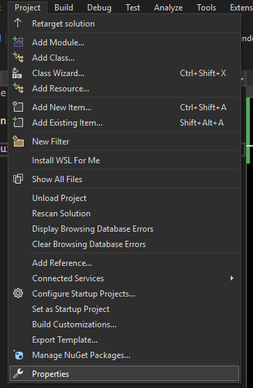
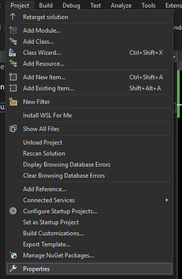

И так, чтобы удобно прогать на Си, нужно обзавестись средой
разработки. Статья пока что неполная, в дальнейшем будет
отредактирована.
Windows
В случае с windows, очевидным решением будет
Visual Studio
(не code). Community версии будет предостаточно (она
бесплатна).
1. На сайте https://visualstudio.microsoft.com скачиваем community версию:

2. После подготовки установщика, возникнет окошко с выбором того, что устанавливать, не стресуем и ставим галочку у следующего окошка:
3. Дальше после установки создаем проект, нажимаем на плитку Create a new project (создать новый проект, если у вас визуалка на русском настроена):
4. Находим вариант с пустым C++ проектом и выбираем его:
5. Выбираем расположение проекта и жмем на кнопку Create (Создать):
6. Открывается наше окошко с проектом, дело за малым, в Solution Explorer находим Resourse Files кликаем туда правой кнопкой мыши, наводим на Add (добавить) и выбираем New Item:
7. Появляется окошко Add New Item, в нем просто меняем (можем не менять) название файла и (это уже надо менять) расширение файла на .c:
8. Поскольку работать с консольным вводом и выводом нам так сразу не дадут, надо еще кое-что сделать с проектом, жмем на на кнопку Project сверху и в менюшке выбираем Properties:

9. Так дальше в менюшке окошка находим C/C++, жмакаем и там же находим Preprocessor, по нему тоже жмакаем.
10. Теперь в Preprocessor Definitions жмем изменить, как показано на картинке:
11. Вставляем туда _CRT_SECURE_NO_WARNINGS . Применяем все и кайфуем.
Что ж, поздравляю, ты настроил проект и можешь начинать прогать на сишке, используя функции scanf, printf и другие функции для работы с файлами.
Установка
Далее поэтапно покажу как скачать то, что надо для разработки на Си (также сможете и на C++ соответственно).1. На сайте https://visualstudio.microsoft.com скачиваем community версию:
2. После подготовки установщика, возникнет окошко с выбором того, что устанавливать, не стресуем и ставим галочку у следующего окошка:
3. Дальше после установки создаем проект, нажимаем на плитку Create a new project (создать новый проект, если у вас визуалка на русском настроена):
4. Находим вариант с пустым C++ проектом и выбираем его:
5. Выбираем расположение проекта и жмем на кнопку Create (Создать):
6. Открывается наше окошко с проектом, дело за малым, в Solution Explorer находим Resourse Files кликаем туда правой кнопкой мыши, наводим на Add (добавить) и выбираем New Item:
7. Появляется окошко Add New Item, в нем просто меняем (можем не менять) название файла и (это уже надо менять) расширение файла на .c:
8. Поскольку работать с консольным вводом и выводом нам так сразу не дадут, надо еще кое-что сделать с проектом, жмем на на кнопку Project сверху и в менюшке выбираем Properties:

9. Так дальше в менюшке окошка находим C/C++, жмакаем и там же находим Preprocessor, по нему тоже жмакаем.
10. Теперь в Preprocessor Definitions жмем изменить, как показано на картинке:
11. Вставляем туда _CRT_SECURE_NO_WARNINGS . Применяем все и кайфуем.
Что ж, поздравляю, ты настроил проект и можешь начинать прогать на сишке, используя функции scanf, printf и другие функции для работы с файлами.